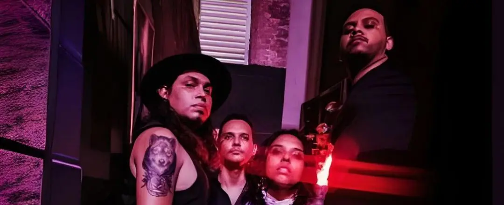
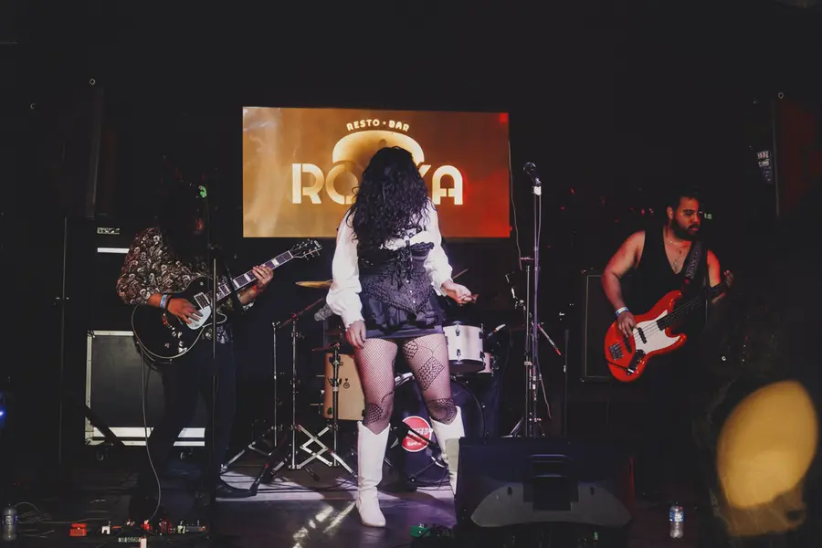
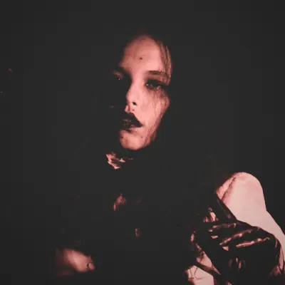
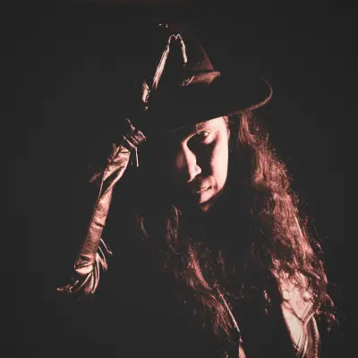
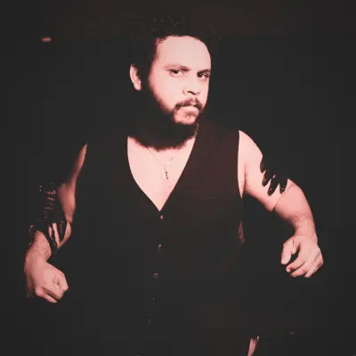
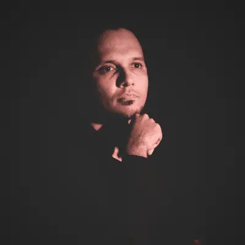

Somos una banda de Barranquilla que busca ser una amalgama sónica, fusionando la nostalgia psicodélica con riffs robustos inspirados en la vibra icónica de Black Sabbath. Con un enfoque meticuloso en la autenticidad vintage, nuestra música se caracteriza por guitarras saturadas y ritmos pesados que encapsulan la esencia cruda del stoner rock de los 70.
En los oscuros confines del 2022, nuestra saga surgió entre susurros de afinidades y melodías. Víctor, el baterista visionario, tejió hábilmente un vínculo entre almas que habían bailado ritmos ancestrales. La banda, inicialmente un tributo a Foo Fighters, tomó un giro inesperado al cruzarse con Yelka, cuya poderosa voz transformó nuestro rumbo. Navegamos un mar de acordes, explorando los límites del rock con voz femenina, hasta que en el silencio, Eddy reveló una verdad ancestral: el llamado de Black Sabbath. Convencidos por este presagio, nuestros corazones emprendieron un nuevo viaje, moldeando nuestra esencia en las profundidades del stoner. Las cuerdas de Jhoel tejieron la pieza final, una sinfonía que reverbera a través de los pasajes del tiempo, honrando los sonidos de una era dorada. Así, Under The Legacy fue forjada en la oscuridad, abrazando una esencia cruda y visceral que nos guía por caminos desconocidos en un viaje perpetuo.


Under The Legacy fusiona la nostalgia del heavy rock de los 70 con una visión contemporánea y conceptual. Nuestra música se define por riffs densos, estructuras hipnóticas y atmósferas envolventes que evocan mundos oscuros y míticos. La banda se inspira en Black Sabbath, Kadavar y el cine de terror clásico para construir una experiencia musical y visual poderosa.

La voz que canaliza el ritual, tejiendo relatos de mito y sombra para envolver al público en un trance hipnótico.
Voz
@BIGVENUSFLYTRAP
El arquitecto del rito sonoro. Sus riffs son los sigilos y sus solos, los conjuros que dan forma a lo informe.
Guitarra
@EDDYRYAM
El ancla al abismo. Su pulso de baja frecuencia es el latido constante de la ceremonia, anclando el caos en la pesadez pura.
Bajo
@JHOEL.MUÑOZ
El corazón de la máquina. Un motor incansable de percusión ritualística, su golpe es el martillo que forja el camino a través del éter sónico.
Batería
@OTERO_PSI